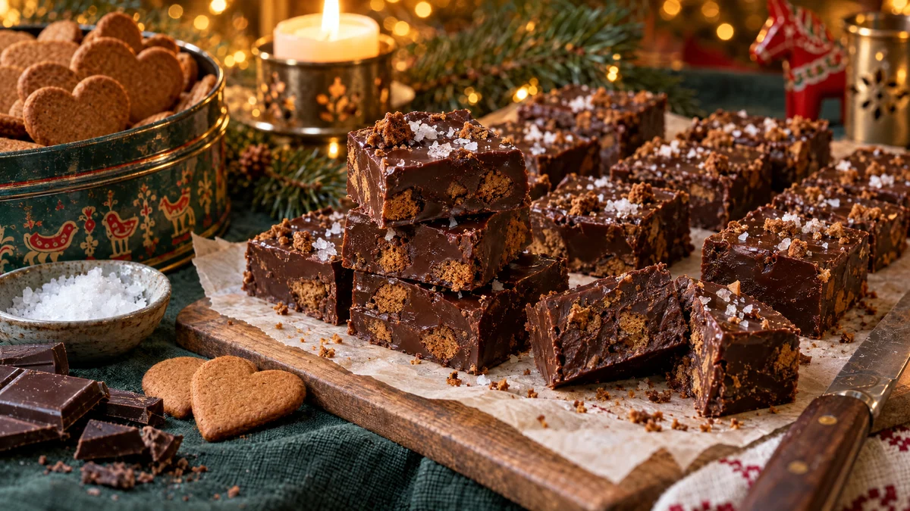

RESTFEST · RECEPTGodis & konfekt
Chokladfudge med pepparkakssmulor och flingsalt
En burk sötad kondenserad mjölk, chokladkakorna i skafferiet och de sista pepparkakorna i burken. Allt smälts ihop till en tät, sammetslen fudge med knapriga pepparkaksbitar, som skärs i små, blanka rutor med flingsalt på toppen. Ingen termometer, ingen ugn, och klar på tio minuter innan kylen gör resten.
- Förberedelse
- 10 min + 3 tim i kylen
- Tillagning
- 10 min
- Portioner
- ca 36 bitar
- Nivå
- Nybörjare
 Det här behöver du
Det här behöver du
Tryck på + vid det du behöver köpa.
Gör så här
- Klä en form, ca 20 × 20 cm, med bakplåtspapper som når upp över kanterna.
- Krossa pepparkakorna grovt i en påse med en kavel. Spara en tredjedel till toppen.
- Hacka chokladen. Lägg choklad, kondenserad mjölk, smör, vaniljsocker och salt i en kastrull.
- Smält allt på låg värme under ständig omrörning, tills smeten är slät och blank. Låt det inte bli för varmt, då kan chokladen skära sig.
- Ta kastrullen från värmen och vänd ner två tredjedelar av pepparkakssmulorna.
- Bred ut fudgen i formen och jämna till ytan. Strö över resten av smulorna och flingsaltet och tryck lätt.
- Ställ formen i kylen i minst 3 timmar, tills fudgen är fast.
- Lyft upp fudgen med pappret och skär den i rutor, ca 3 × 3 cm, med en vass kniv som doppats i varmt vatten och torkats av mellan varje snitt.
Dekoration och servering
- Lägg fudgebitarna i små pappersformar, eller stapla dem i rader i en ask med bakplåtspapper emellan.
- Ta fram fudgen 15 minuter före servering, då blir den mjuk och sammetslen.
- Byt pepparkakorna mot hackade nötter, kanderade apelsinskal eller torkade tranbär.
- Fudgen håller ca 2 veckor i kylen i en lufttät burk och kan frysas.
Mått och ugnstemperaturer
Måtten är svenska (dl, msk, tsk, krm). Ugnstemperaturerna gäller vanlig ugn med över- och undervärme; med varmluft, sänk med 20 grader.